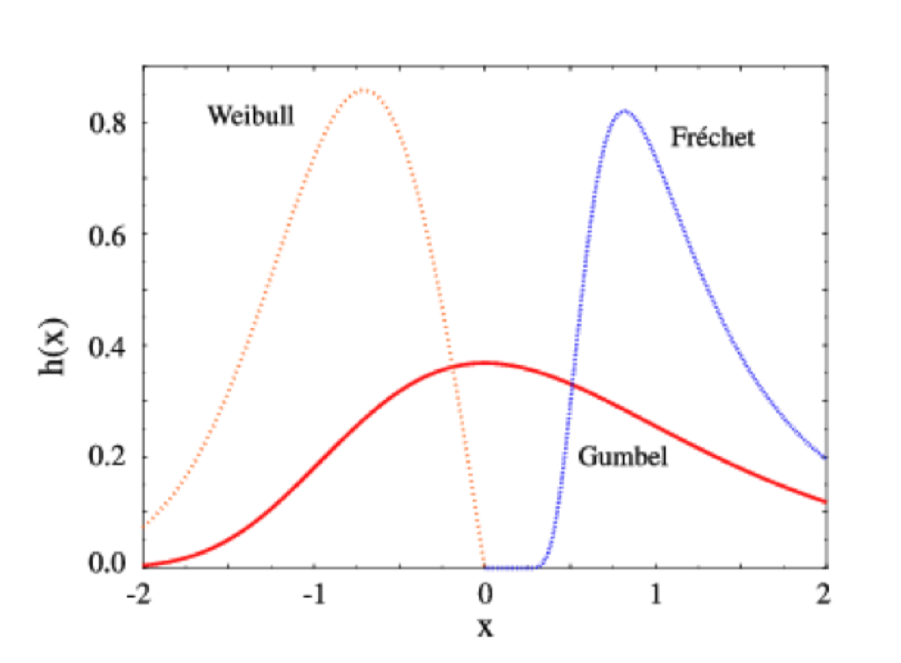
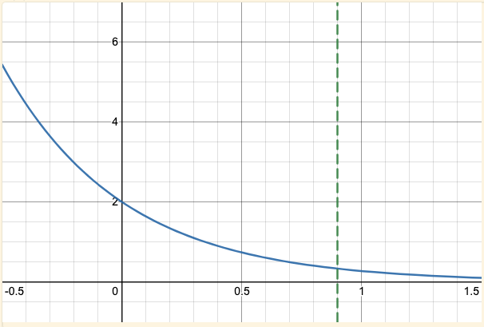

Chapter 4 Modelling Extreme Events
4.1 Stylized Facts
Characteristics of typical empirical asset returns:
- Absence of simple autocorrelations
- Returns are not correlated with past time-steps of itself
- Volatility clustering
- Large amounts of volatility often occur in clusters through time
- Heavy tails
- Returns often have very abnormal (large) values suggesting heavy tail distributions
- Intermittency
- Aggregation changes distribution
- Gain/loss asymmetry
- The market tends to go up over time
4.2 Extreme Value Theory
This theory helps with modelling extreme events that have small probabilities of occurring.
4.2.2 1st Theorem: Fisher-Tippet-Gnedenko
Theres no need to prove any results
If \(X_{1}, X_{2}, \dots\) are i.i.d. RVs, we can create a RV that simply takes the maximum of \(n\) RVs called \(M_{n} = max(X_{1}, X_{2}, \dots X_{n})\).
In certain cases, we can find normalizing constants \(a_{n}>0, b_{n}\) such that they can be transformed into one of the three distributions (identified by \(H(x)\)) which can be much easier to work with.
\[ \begin{aligned} P\left( \frac{M_{n}-b_{n}}{a_{n}} \leq x\right) &= [F(a_{n}x+b_{n})]^{n} \to H(x)\\ F(a_{n}x+b_{n}) &= \text{Single RV} \end{aligned} \] This is just saying that the normalized max RV is less than some value \(x\) is just the probability of each individual RV being less than the transformed value of \(x\).
\[ \begin{aligned} H(x) &= \begin{cases} Gumbel & \exp\{-e^{-x}\} \quad\quad x \in \mathbb{R}\\ Frechet & \begin{cases} 0 & x < 0 \\ \exp\{-x^{-\alpha}\} & x >0 \end{cases}\\ Weibull & \begin{cases} \exp\{-|x|^{\alpha}\} & x<0 \\ 1 & x > 0 \end{cases} \end{cases} \end{aligned} \] Where \(\alpha > 0\) for the Frechet and Weibull distributions.

4.2.3 Generalized Extreme Value (GEV) Distribution
The three types of distributions can be represented using: \[ \begin{aligned} H(x) &= \exp\left\{ -\left( 1+\xi\frac{x-\mu}{\sigma} \right)^{-1/\xi}_{+} \right\}\\ \text{Where } \mu &= \text{location}\\ \sigma &= \text{scale}\\ \xi &= \text{shape parameters} \begin{cases} \xi>0 & \text{heavy tails (Frechet)} \\ \xi=0 & \text{exponential tails (Gumbel)} \\ \xi < 0 & \text{short/light tails (Weibull)} \end{cases} \end{aligned} \] Where the \(\xi\) value describes the tail behaviour
The log-transformation of the Frechet(\(\alpha=1\)) is the Gumbel distribution! \[ \begin{aligned} \ln(H_{F}(x)) &= \ln\left[ \exp\{-x^{-1}\}\right]\\ &= -\left( 1+\frac{x-\mu}{\sigma} \right)^{-1}\\ \\ &= H_{G} = \exp \left\{ -\left( 1+0\cdot \frac{x-\mu}{\sigma} \right)^{-1/0} \right\} \end{aligned} \]
As an example, we’ll show that the normalized maximum of i.i.d. Uniform(0,1) aka \(F_{n}(x) = x\) with \(a_{n}=1/n, b_{n}=1\) converges to the Weibull distribution. \[ \begin{aligned} P\left( \frac{M_{n}-b_{n}}{a_{n}} \leq x\right) &= P\left( \frac{M_{n}-1}{1/n} \leq x\right)\\ & b_{n}\text{ shifts the Uniform from (0,1) to (-1,0)}\\ &= P\left( M_{n} \leq \frac{x}{n}+1 \right)\\ &= P\left( \max(U_{1}, U_{2}, \dots U_{n}) \leq 1+\frac{x}{n} \right)\\ &= \prod^{n}_{i=1} \underbrace{ P\left( U_{i}\leq 1+\frac{x}{n} \right) }_{ \left( 1+\frac{x}{n} \right) }\\ &= \left( 1+\frac{x}{n} \right)^{n}\\ & \text{because } x<0, \quad 1+ (-.4) = 1-|-.4|\\ &=\left( 1-\frac{|x|}{n} \right)^{n}\\ \\ \lim_{ n \to \infty } \left( 1-\frac{|x|}{n} \right)^{n} &\to \exp\{((-1)|x|)^{-1/-1}\}\\ &= \exp\{-|x|^{1}\} \implies Weibull(\alpha=1)\\ \end{aligned} \]
4.2.4 2nd Theorem: Pickands-Balkema-De Haan
For any RV \(X\) with CDF \(F(\cdot)\), it’s conditional distribution when exceeding a certain threshold \(u\) is: \[ \begin{aligned} F_{u}(y) &= \frac{F(u+y)-F(u)}{1-F(u)}, \quad 0\leq y\leq x_{F}-u\\ \text{Where } x_{F} &= sup\{x \in \mathbb{R}:F(x) < 1\} \text{ is the right endpoint of } F \end{aligned} \]
\(x_{F}\) could be finite, or \(\infty\). As \(u\to x_{F}\), the conditional distribution converges to something belonging to the Generalized Pareto Distribution (GPD). \[ F_{u}(y) \to G_{\xi, \sigma}(y) \] The Generalized Pareto Distribution (GPD) is given by: \[ \begin{aligned} G_{\xi,\sigma}(y) &= 1 - \left( 1+\xi \frac{y}{\sigma} \right)^{-1/\xi}_{+} = \begin{cases} G_{\xi, \sigma}(y) = 1-\left( 1+\xi \frac{y}{\sigma} \right)^{-1/\xi} & \xi \ne 0\\ G_{\xi, \sigma}(y) = 1-\exp\left\{ -\frac{y}{\sigma} \right\} & \xi = 0 \end{cases}\\ \text{Where } & \sigma > 0, y\geq 0, \quad y\leq-\frac{\sigma}{\xi} \text{ when } \xi < 0 \end{aligned} \]
\(f(x) = \lambda e^{-\lambda x}, \lambda>0\)
bottom=-1; left=-0.5; right=1.5;
---
y=2 \exp(-2x)
x=.9|dashed
The exponential distribution is used to model waiting times, no matter how much time has passed. The conditional distribution